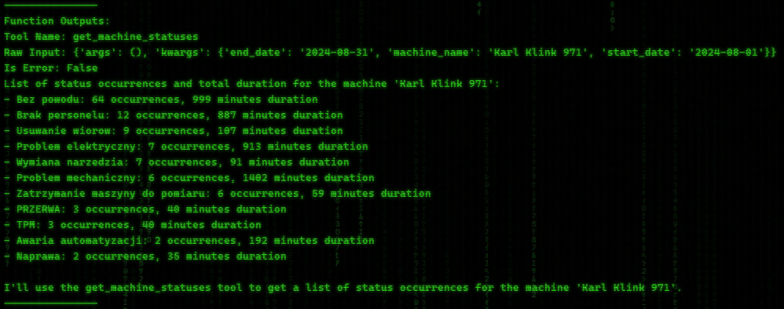

Function Calling Agents with local LLMs
Thank you for taking the time to visit the Production Data Agents project! This project focuses on analyzing production data, specifically machine status information from the Syncos system. The status data includes entries such as "No reason" or "Tool breakage," which provide insights into why a machine was stopped and how long the downtime lasted. Additionally, the project involves analyzing the overall equipment effectiveness (OEE) of the machines.
The goal of the project is to develop LLM agents capable of using predefined functions to retrieve machine status and efficiency data based on user prompts. These agents will interact with the production data, allowing users to query for specific machine statuses or OEE values, streamlining the analysis process and improving decision-making capabilities.
This agent is designed to retrieve and analyze machine status data from the production system. It uses a set of predefined functions to extract key information related to machine stoppages and statuses, helping users query specific machines, departments, and orders. The agent provides flexibility by allowing users to define custom time ranges for their queries.
Some of the key tasks this agent can perform include:
Example prompt: I need to know occurrences of machines that have status 'Problem jakosciowy' in August 2024? Whats the duration for this machines? Calculate duration/occurrences ratio.
Retrieving a list of status occurrences for a specific machine or order number within an optional date range.
Example prompt: I need to know statuses for machine 'Karl Klink 971' in August 2024.
Grouping status data by departments, showing the number of occurrences and durations for each department.
Example prompt: Please show the list of departments with occurrences and duration for the status 'Brak narzedzia' in August 2024. Calculate duartion/occurrence ratio
Sorting unique order numbers and providing details on status occurrences and durations for each machine involved.
Example prompt: What order numbers have most occurences of status 'Usuwanie wiorow'?
These functionalities allow users to efficiently access machine performance data, identify issues, and track how different statuses affect overall production within a defined timeframe. The agent simplifies the process by handling complex queries and delivering concise, actionable insights.
The OEE Function Calling Agent is responsible for calculating and analyzing the Overall Equipment Effectiveness (OEE) of machines or parts based on production data. This agent helps users understand machine efficiency by evaluating key performance metrics such as Availability, Performance, and Quality. It allows for detailed analysis at both individual machine and overall system levels.
Key tasks of this agent include:
Example prompt: What are top 3 least efficient machines? Sort by performance.
Calculating OEE for all machines in a dataset, enabling a broad analysis of equipment performance across the entire production system.
Example prompt: Tell me more about Gildemeister GM35/40352.
By automating these tasks, the agent significantly enhances the ability to monitor and improve production efficiency, giving actionable insights into machine performance and overall equipment effectiveness.
The Production Data Function Calling Agents with Local LLMs project offers a highly efficient and automated approach to analyzing production data, particularly focused on machine statuses and OEE metrics. By leveraging LLM agents, users can retrieve specific machine information, identify downtime causes, and assess overall equipment effectiveness quickly and accurately. This system significantly enhances decision-making by providing clear, actionable insights directly from production data.
Key Benefits:
Future Plans:
The next step is to develop an integrated system where all agents work seamlessly together, capable of answering production-related questions, generating reports, and offering a complete view of machine performance. This unified system will significantly streamline production management and reporting processes.
{kind=link}
{kind=link}
{kind=link}
{kind=link}
{kind=link}
{kind=link}